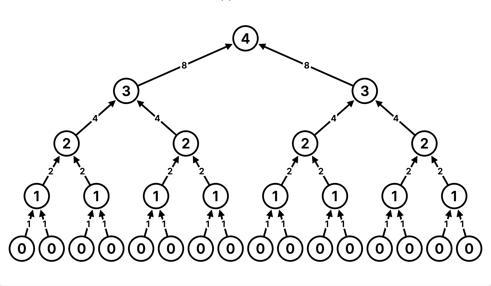

Lab 9 Solutions
Solution Files
Topics
Consult this section if you need a refresher on the material for this lab. It's okay to skip directly to the questions and refer back here should you get stuck.
Mutable Trees
We define a tree to be a recursive data abstraction that has a label (the
value stored in the root of the tree) and branches (a list of trees directly
underneath the root).
Previously we implemented trees by using a functional data abstraction, with the tree constructor function and the label and branches selector functions. Now we implement trees by creating the Tree class. Here is part of the class included in the lab.
class Tree:
"""
>>> t = Tree(3, [Tree(2, [Tree(5)]), Tree(4)])
>>> t.label
3
>>> t.branches[0].label
2
>>> t.branches[1].is_leaf()
True
"""
def __init__(self, label, branches=[]):
for b in branches:
assert isinstance(b, Tree)
self.label = label
self.branches = list(branches)
def is_leaf(self):
return not self.branchesEven though this is a new implementation, everything we know about the functional tree data abstraction remains true. That means that solving problems involving trees as objects uses the same techniques that we developed when first studying the functional tree data abstraction (e.g. we can still use recursion on the branches!). The main difference, aside from syntax, is that tree objects are mutable.
Here is a summary of the differences between the tree data abstraction implemented as a functional abstraction vs. implemented as class:
| - | Tree constructor and selector functions | Tree class |
|---|---|---|
| Constructing a tree | To construct a tree given a label and a list of branches, we call tree(label, branches) |
To construct a tree object given a label and a list of branches, we call Tree(label, branches) (which calls the Tree.__init__ method). |
| Label and branches | To get the label or branches of a tree t, we call label(t) or branches(t) respectively |
To get the label or branches of a tree t, we access the instance attributes t.label or t.branches respectively. |
| Mutability | The functional tree data abstraction is immutable because we cannot assign values to call expressions | The label and branches attributes of a Tree instance can be reassigned, mutating the tree. |
| Checking if a tree is a leaf | To check whether a tree t is a leaf, we call the convenience function is_leaf(t) |
To check whether a tree t is a leaf, we call the bound method t.is_leaf(). This method can only be called on Tree objects. |
Efficiency (Orders of Growth)
When we talk about the efficiency of a function, we are often interested in the following: as the size of the input grows, how does the runtime of the function change? And what do we mean by runtime?
Example 1: square(1) requires one primitive operation: multiplication.
square(100) also requires one. No matter what input n we pass into square, it always takes a constant number of operations (1). In other words, this function has a runtime complexity of Θ(1).
As an illustration, check out the table below:
| input | function call | return value | operations |
|---|---|---|---|
| 1 | square(1) |
1*1 | 1 |
| 2 | square(2) |
2*2 | 1 |
| ... | ... | ... | ... |
| 100 | square(100) |
100*100 | 1 |
| ... | ... | ... | ... |
| n | square(n) |
n*n | 1 |
Example 2: factorial(1) requires one multiplication, but factorial(100) requires 100 multiplications. As we increase the input size of n, the runtime (number of operations) increases linearly proportional to the input. In other words, this function has a runtime complexity of Θ(n).
As an illustration, check out the table below:
| input | function call | return value | operations |
|---|---|---|---|
| 1 | factorial(1) |
1*1 | 1 |
| 2 | factorial(2) |
2*1*1 | 2 |
| ... | ... | ... | ... |
| 100 | factorial(100) |
100*99*...*1*1 | 100 |
| ... | ... | ... | ... |
| n | factorial(n) |
n*(n-1)*...*1*1 | n |
Example 3: Consider the following function:
def bar(n):
for a in range(n):
for b in range(n):
print(a,b)bar(1) requires 1 print statements, while bar(100) requires 100*100 = 10000 print statements (each time a increments, we have 100 print statements due to the inner for loop). Thus, the runtime increases quadratically proportional to the input. In other words, this function has a runtime complexity of Θ(n^2).
| input | function call | operations (prints) |
|---|---|---|
| 1 | bar(1) |
1 |
| 2 | bar(2) |
4 |
| ... | ... | ... |
| 100 | bar(100) |
10000 |
| ... | ... | ... |
| n | bar(n) |
n^2 |
Example 4: Consder the following function:
def rec(n):
if n == 0:
return 1
else:
return rec(n - 1) + rec(n - 1)rec(1) requires one addition, as it returns rec(0) + rec(0), and rec(0) hits the base case and requires no further additions. but rec(4) requires 2^4 - 1 = 15 additions. To further understand the intuition, we can take a look at the recurisve tree below. To get rec(4), we need one addition. We have two calls to rec(3), which each require one addition, so this level needs two additions. Then we have four calls to rec(2), so this level requires four additions, and so on down the tree. In total, this adds up to 1 + 2 + 4 + 8 = 15 additions.

As we increase the input size of n, the runtime (number of operations) increases exponentially proportional to the input. In other words, this function has a runtime complexity of Θ(2^n).
As an illustration, check out the table below:
| input | function call | return value | operations |
|---|---|---|---|
| 1 | rec(1) |
2 | 1 |
| 2 | rec(2) |
4 | 3 |
| ... | ... | ... | ... |
| 10 | rec(10) |
1024 | 1023 |
| ... | ... | ... | ... |
| n | rec(n) |
2^n |
2^n |
Here are some general guidelines for finding the order of growth for the runtime of a function:
If the function is recursive or iterative, you can subdivide the problem as seen above:
- Count the number of recursive calls/iterations that will be made in terms of input size
n. - Find how much work is done per recursive call or iteration in terms of input size
n. - The answer is usually the product of the above two, but be sure to pay attention to control flow!
- Count the number of recursive calls/iterations that will be made in terms of input size
- If the function calls helper functions that are not constant-time, you need to take the runtime of the helper functions into consideration.
- We can ignore constant factors. For example
1000000nandnsteps are both linear. - We can also ignore smaller factors. For example if
hcallsfandg, andfis Quadratic whilegis linear, thenhis Quadratic. For the purposes of this class, we take a fairly coarse view of efficiency. All the problems we cover in this course can be grouped as one of the following:
- Constant: the amount of time does not change based on the input size. Rule:
n --> 2nmeanst --> t. - Logarithmic: the amount of time changes based on the logarithm of the input size. Rule:
n --> 2nmeanst --> t + k. - Linear: the amount of time changes with direct proportion to the size of the input. Rule:
n --> 2nmeanst --> 2t. - Quadratic: the amount of time changes based on the square of the input size. Rule:
n --> 2nmeanst --> 4t. - Exponential: the amount of time changes with a power of the input size. Rule:
n --> n + 1meanst --> 2t.
- Constant: the amount of time does not change based on the input size. Rule:
Required Questions
Getting Started Videos
These videos may provide some helpful direction for tackling the coding problems on this assignment.
To see these videos, you should be logged into your berkeley.edu email.
Trees
Q1: WWPD: Trees
Read over the Tree class in lab09.py. Make sure you understand the
doctests.
Use Ok to test your knowledge with the following "What Would Python Display?" questions:
python3 ok -q trees-wwpd -uEnter
Functionif you believe the answer is<function ...>,Errorif it errors, andNothingif nothing is displayed. Recall thatTreeinstances will be displayed the same way they are constructed.
>>> from lab09 import *
>>> t = Tree(1, Tree(2))
______Error
>>> t = Tree(1, [Tree(2)])
>>> t.label
______1
>>> t.branches[0]
______Tree(2)
>>> t.branches[0].label
______2
>>> t.label = t.branches[0].label
>>> t
______Tree(2, [Tree(2)])
>>> t.branches.append(Tree(4, [Tree(8)]))
>>> len(t.branches)
______2
>>> t.branches[0]
______Tree(2)
>>> t.branches[1]
______Tree(4, [Tree(8)])Q2: Make Even
Define a function make_even which takes in a tree
t whose values are integers, and mutates the tree such that all the
odd integers are increased by 1 and all the even integers remain the same.
def make_even(t):
"""
>>> t = Tree(1, [Tree(2, [Tree(3)]), Tree(4), Tree(5)])
>>> make_even(t)
>>> t.label
2
>>> t.branches[0].branches[0].label
4
"""
if t.label % 2 != 0:
t.label += 1
for branch in t.branches:
make_even(branch)
return
# Alternate Solution
t.label += t.label % 2
for branch in t.branches:
make_even(branch)
returnUse Ok to test your code:
python3 ok -q make_evenQ3: Cumulative Mul
Write a function cumulative_mul that mutates the Tree t so that each node's
label becomes the product of its label and all labels in the subtrees rooted at the node.
Hint: Consider carefully when to do the mutation of the tree and whether that mutation should happen before or after processing the subtrees.
def cumulative_mul(t):
"""Mutates t so that each node's label becomes the product of all labels in
the corresponding subtree rooted at t.
>>> t = Tree(1, [Tree(3, [Tree(5)]), Tree(7)])
>>> cumulative_mul(t)
>>> t
Tree(105, [Tree(15, [Tree(5)]), Tree(7)])
>>> otherTree = Tree(2, [Tree(1, [Tree(3), Tree(4), Tree(5)]), Tree(6, [Tree(7)])])
>>> cumulative_mul(otherTree)
>>> otherTree
Tree(5040, [Tree(60, [Tree(3), Tree(4), Tree(5)]), Tree(42, [Tree(7)])])
"""
for b in t.branches:
cumulative_mul(b)
total = t.label
for b in t.branches:
total *= b.label
t.label = total
# Alternate solution using only one loop
def cumulative_mul(t):
for b in t.branches:
cumulative_mul(b)
t.label *= b.labelUse Ok to test your code:
python3 ok -q cumulative_mulQ4: Prune Small
Complete the function prune_small that takes in a Tree t and a
number n and prunes t mutatively. If t or any of its branches
has more than n branches, the n branches with the smallest labels
should be kept and any other branches should be pruned, or removed,
from the tree.
Hint: The
maxfunction takes in aniterableas well as an optionalkeyargument (which takes in a one-argument function). For example,max([-7, 2, -1], key = abs)would return-7sinceabs(-7)is greater thanabs(2)andabs(-1).
def prune_small(t, n):
"""Prune the tree mutatively, keeping only the n branches
of each node with the smallest labels.
>>> t1 = Tree(6)
>>> prune_small(t1, 2)
>>> t1
Tree(6)
>>> t2 = Tree(6, [Tree(3), Tree(4)])
>>> prune_small(t2, 1)
>>> t2
Tree(6, [Tree(3)])
>>> t3 = Tree(6, [Tree(1), Tree(3, [Tree(1), Tree(2), Tree(3)]), Tree(5, [Tree(3), Tree(4)])])
>>> prune_small(t3, 2)
>>> t3
Tree(6, [Tree(1), Tree(3, [Tree(1), Tree(2)])])
"""
while len(t.branches) > n: largest = max(t.branches, key=lambda x: x.label) t.branches.remove(largest) for b in t.branches: prune_small(b, n)Use Ok to test your code:
python3 ok -q prune_smallEfficiency
Q5: Orders of Growth
The following is a quick check on different orders of growth and runtimes that you'll run into in this class. You can refer to the orders of growth study guide for helpful hints regarding these questions!
Determine the order of growth of each of the functions specified below.
Choose one of:
- Constant
- Logarithmic
- Linear
- Quadratic
- Exponential
- None of these
Use Ok to test your understanding:
python3 ok -q efficiency-quiz -uWhat is the worst case (i.e. when n is prime) order of growth of is_prime in terms of n?
def is_prime(n):
for i in range(2, n):
if n % i == 0:
return False
return TrueLinear Θ(n)
In the worst case, n is prime, and we have to execute the
loop n - 2 times. Each iteration takes constant time (one conditional check
and one return statement). Therefore, the total time is n - 2 times a constant,
or simply linear.
What is the order of growth of bar in terms of n?
def bar(n):
i, sum = 1, 0
while i <= n:
sum += biz(n)
i += 1
return sum
def biz(n):
i, sum = 1, 0
while i <= n:
sum += i**3
i += 1
return sumQuadratic Θ(n2)
The body of the while loop in bar is executed n times.
Each iteration, one call to biz(n) is made. Note that n never changes,
so this call takes the same time to run each iteration.
Taking a look at biz, we see that there is another while loop. Be careful
to note that although the term being added to sum is cubed (i**3),
i itself is only incremented by 1 in each iteration.
This tells us that this while loop also executes n times, with each iteration
taking constant time, so the total time of biz(n) is n x constant, or linear.
Knowing that each call to biz(n) takes linear time,
we can conclude that each iteration of the while loop in bar is linear.
Therefore, the total runtime of bar(n) is quadratic.
What is the order of growth of foo in terms of n, where n is the length
of lst? Assume that slicing a list and calling len on a list can both be
done in constant time.
def foo(lst, i):
mid = len(lst) // 2
if mid == 0:
return lst
elif i > 0:
return foo(lst[mid:], -1)
else:
return foo(lst[:mid], 1)Logarithmic Θ(log(n))
A single recursive call is made in the body of foo on half the
input list (either the first half or the second half depending on the input
flag i). The base case is executed when the list either is empty or has only
one element. We start with an n element list and halve the list until there
is at most 1 element, which means there will be log(n) total calls. Each
call, constant work is done if we ignore the recursive call. The total runtime
is then log(n) * θ(1).
Note: We simplified this problem by assuming that slicing a list takes
constant time. In reality, this operation is a bit more nuanced and may take
linear time. As an additional exercise, try determining the order of growth
of this function if we assuming slicing takes linear time.
Check Your Score Locally
You can locally check your score on each question of this assignment by running
python3 ok --scoreThis does NOT submit the assignment! When you are satisfied with your score, submit the assignment to Gradescope to receive credit for it.
Submit
Make sure to submit this assignment by uploading any files you've edited to the appropriate Gradescope assignment. For a refresher on how to do this, refer to Lab 00.
Optional Questions
These questions are optional, but you must complete them in order to be checked off before the end of the lab period. They are also useful practice!
Q6: Is BST
Write a function is_bst, which takes a Tree t and returns True if, and
only if, t is a valid binary search tree, which means that:
- Each node has at most two children (a leaf is automatically a valid binary search tree)
- The children are valid binary search trees
- For every node, the entries in that node's left child are less than or equal to the label of the node
- For every node, the entries in that node's right child are greater than the label of the node
An example of a BST is:

Note that, if a node has only one child, that child could be considered either the left or right child. You should take this into consideration.
Hint: It may be helpful to write helper functions bst_min and bst_max that
return the minimum and maximum, respectively, of a Tree if it is a valid binary
search tree.
def is_bst(t):
"""Returns True if the Tree t has the structure of a valid BST.
>>> t1 = Tree(6, [Tree(2, [Tree(1), Tree(4)]), Tree(7, [Tree(7), Tree(8)])])
>>> is_bst(t1)
True
>>> t2 = Tree(8, [Tree(2, [Tree(9), Tree(1)]), Tree(3, [Tree(6)]), Tree(5)])
>>> is_bst(t2)
False
>>> t3 = Tree(6, [Tree(2, [Tree(4), Tree(1)]), Tree(7, [Tree(7), Tree(8)])])
>>> is_bst(t3)
False
>>> t4 = Tree(1, [Tree(2, [Tree(3, [Tree(4)])])])
>>> is_bst(t4)
True
>>> t5 = Tree(1, [Tree(0, [Tree(-1, [Tree(-2)])])])
>>> is_bst(t5)
True
>>> t6 = Tree(1, [Tree(4, [Tree(2, [Tree(3)])])])
>>> is_bst(t6)
True
>>> t7 = Tree(2, [Tree(1, [Tree(5)]), Tree(4)])
>>> is_bst(t7)
False
"""
def bst_min(t):
"""Returns the min of t, if t has the structure of a valid BST."""
if t.is_leaf():
return t.label
return min(t.label, bst_min(t.branches[0]))
def bst_max(t):
"""Returns the max of t, if t has the structure of a valid BST."""
if t.is_leaf():
return t.label
return max(t.label, bst_max(t.branches[-1]))
if t.is_leaf():
return True
if len(t.branches) == 1:
c = t.branches[0]
return is_bst(c) and (bst_max(c) <= t.label or bst_min(c) > t.label)
elif len(t.branches) == 2:
c1, c2 = t.branches
valid_branches = is_bst(c1) and is_bst(c2)
return valid_branches and bst_max(c1) <= t.label and bst_min(c2) > t.label
else:
return FalseUse Ok to test your code:
python3 ok -q is_bstQ7: Add trees
Define the function add_trees, which takes in two trees and returns a new
tree where each corresponding node from the first tree is added with the node
from the second tree. If a node at any particular position is present in one
tree but not the other, it should be present in the new tree as well.
Hint: You may want to use the built-in zip function to iterate over multiple sequences at once.
def add_trees(t1, t2):
"""
>>> numbers = Tree(1,
... [Tree(2,
... [Tree(3),
... Tree(4)]),
... Tree(5,
... [Tree(6,
... [Tree(7)]),
... Tree(8)])])
>>> print(add_trees(numbers, numbers))
2
4
6
8
10
12
14
16
>>> print(add_trees(Tree(2), Tree(3, [Tree(4), Tree(5)])))
5
4
5
>>> print(add_trees(Tree(2, [Tree(3)]), Tree(2, [Tree(3), Tree(4)])))
4
6
4
>>> print(add_trees(Tree(2, [Tree(3, [Tree(4), Tree(5)])]), \
Tree(2, [Tree(3, [Tree(4)]), Tree(5)])))
4
6
8
5
5
"""
if not t1: return t2 if not t2: return t1 new_label = t1.label + t2.label t1_branches, t2_branches = list(t1.branches), list(t2.branches) length_t1, length_t2 = len(t1_branches), len(t2_branches) if length_t1 < length_t2: t1_branches += [None for _ in range(length_t1, length_t2)] elif length_t1 > length_t2: t2_branches += [None for _ in range(length_t2, length_t1)] return Tree(new_label, [add_trees(branch1, branch2) for branch1, branch2 in zip(t1_branches, t2_branches)])Use Ok to test your code:
python3 ok -q add_trees